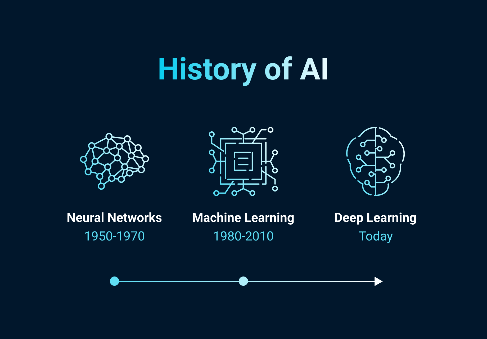

|
 A múltAz 1950-es években Alan Turing elméleteivel és merev, szabályalapú programokkal indult az MI kutatása. A fejlődést évtizedekig lassította a korlátozott számítási kapacitás és a digitális adatok hiánya. |
A jelenMa az MI a gépi tanulás révén tapasztalatokból fejlődik, és az orvostudománytól a telefonokig mindenütt jelen van. Bár az algoritmusok rendkívül hatékonyak, valódi öntudat nélkül továbbra is emberi felügyeletet igényelnek. |
A jövőA jövőben az MI forradalmasíthatja a közlekedést és a gyógyítást, miközben alapjaiban formálja át a munkaerőpiacot. A legnagyobb kihívást az etikus használat és a biztonságos jogi szabályozás megteremtése jelenti majd. |